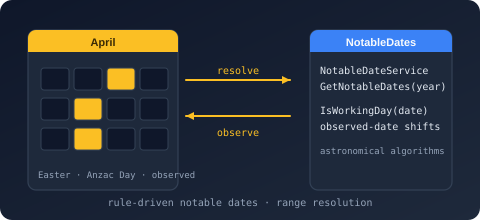

Bodu.Globalization.Calendar.RangeResolution Namespace
- Package

Bodu.Globalization.Calendar.RangeResolution
Purpose
Bodu.Globalization.Calendar.RangeResolution holds the policy vocabulary that governs how resolved occurrences are de-duplicated, how same-day and overlapping-span collisions are settled, which occurrence (actual or observed) controls range-query inclusion, and which days count as the working week.
These policies are carried by the document's <ResolutionPolicy> element and surfaced as ResolutionPolicy on the loaded NotableDateResource. They are resource-level (authored once per document) rather than per-query.
Static documentation
- The resolution pipeline - the stages a query runs through and where each policy applies.
- Rule identity, priority, and observed-date resolution - duplicate / collision settlement and observed-date range inclusion in detail.
Key types
- ResolutionPolicy - the policy bundle:
DuplicatePolicy,SameDayCollisionPolicy,SpanCollisionPolicy,PriorityDirection,ObservedDateRangePolicy, and the working week (aBodu.CoreWeekPattern, default Monday-Friday).ResolutionPolicy.Defaultis the all-defaults instance. - DuplicatePolicy - how identical occurrences are reconciled:
Error,KeepFirst,KeepLast,Merge. - CollisionPolicy - how distinct rules landing on the same day (or with overlapping spans) are settled:
KeepAll,HighestPriorityOnly,CategoryPriority,Custom. - PriorityDirection - whether a higher or lower
Prioritywins:HigherWins,LowerWins. - EmissionMode - what an adjustment emits:
ActualOnly,ObservedOnly,ActualAndObserved,ObservedAsAdditional,Suppress. - ObservedDateRangePolicy - which occurrence date controls inclusion in a range query:
ObservedOccurrenceControlsInclusion,ActualOccurrenceControlsInclusion,BothOccurrencesControlInclusion. - INotableDateCollisionResolver -
Resolve(DateOnly date, IReadOnlyList<NotableDate> colliding). Implement this to settle same-day collisions yourself; it is consulted only underCollisionPolicy.Customand is supplied through NotableDateServiceOptions.CollisionResolverwhen theNotableDateServiceis constructed.
Authored example
<ResolutionPolicy duplicatePolicy="KeepFirst"
sameDayCollisionPolicy="HighestPriorityOnly"
priorityDirection="HigherWins"
observedDateRangePolicy="ObservedOccurrenceControlsInclusion"
workingDays="0111110" /> <!-- Sunday-first; Mon-Fri working -->
Classes
- ResolutionPolicy
Captures the resource-level policies that govern duplicate handling, collision handling, priority direction, and observed-date range inclusion.
Interfaces
- INotableDateCollisionResolver
Resolves a set of notable-date occurrences that share the same emitted date, used when the resource's same-day collision policy is Custom.
Enums
- CollisionPolicy
Determines how the resolver treats multiple distinct notable dates that resolve to the same day or overlapping span.
- DuplicatePolicy
Determines how the loader treats two rules that resolve to the same full identity within a resource graph.
- EmissionMode
Controls which occurrences an adjustment policy emits when its trigger is active: the originally calculated (actual) occurrence, the adjusted (observed) occurrence, both, or neither.
- ObservedDateRangePolicy
Determines which emitted occurrence controls whether a resolved notable date is included by a date-range query.
- PriorityDirection
Determines whether a higher or lower numeric priority value takes precedence during selection.